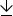
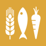
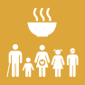
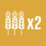
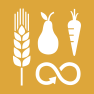
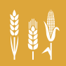
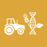
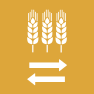
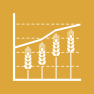

Hunger is the leading cause of death in the world. Our planet has provided us with tremendous resources, but unequal access and inefficient handling leaves millions of people malnourished. If we promote sustainable agriculture with modern technologies and fair distribution systems, we can sustain the whole world’s population and make sure that nobody will ever suffer from hunger again.
GOAL 2 IN ACTION
To end world hunger, we all have to take action. Get inspired here:
#Goal2
@SdgRadio
3 hours ago
A deep dive into Zero Hunger: the seaweed revolution https://news.un.org/feed/view/en/story/2020/11/1077212 #SDGs #Goal2 #Agenda2030 #ShapingOurFutureTogeth...
@SdgRadio
3 hours ago
A deep dive into Zero Hunger: the seaweed revolution https://news.un.org/feed/view/en/story/2020/11/1077212 #SDGs #Goal2 #Agenda2030 #ShapingOurFutureTogether #SDGRadio
SEE ALL TWEETS
ICONSFOR GOAL 2
Download the primary icon and target icons for Goal 2 in png and vector formats.
DOWNLOAD ZIP Published on October 26, 2020
WIKI LOVES SDGS: A COMMUNITY OF GLOBAL GOALS FACTIVISTS
It goes without saying that 2020 has halted our plans. From key events such as the World Oceans Summit, Generation Equality as well as the UN Climate Change Conference (C
READ MOREPublished on September 4, 2020
BECOME A FACTIVIST
This has been a year like no other. As Arundhati Roy said, COVID-19 has ‘made the mighty kneel and brought the world to a halt’ but we have a chance to turn it around.
READ MOREPublished on May 10, 2019
UNITED NATIONS SECRETARY-GENERAL ANTÓNIO GUTERRES HAS APPOINTED NEW SUSTAINABLE DEVELOPMENT GOALS ADVOCATES
17 Advocates for the Global…
READ MORETHE TARGETS
Everyone can help to make sure that we meet the Global Goals. Use these eight targets to eradicate world hunger.
TARGET 2.1
UNIVERSAL ACCESS TO SAFE AND NUTRITIOUS FOOD
By 2030, end hunger and ensure access by all people, in particular the poor and people in vulnerable situations, including infants, to safe, nutritious and sufficient food all year round.
TARGET 2.2
END ALL FORMS OF MALNUTRITION
By 2030, end all forms of malnutrition, including achieving, by 2025, the internationally agreed targets on stunting and wasting in children under 5 years of age, and address the nutritional needs of adolescent girls, pregnant and lactating women and older persons.
TARGET 2.3
DOUBLE THE PRODUCTIVITY AND INCOMES OF SMALL-SCALE FOOD PRODUCERS
By 2030, double the agricultural productivity and incomes of small-scale food producers, in particular women, indigenous peoples, family farmers, pastoralists and fishers, including through secure and equal access to land, other productive resources and inputs, knowledge, financial services, markets and opportunities for value addition and non-farm employment.
TARGET 2.4
SUSTAINABLE FOOD PRODUCTION AND RESILIENT AGRICULTURAL PRACTICES
By 2030, ensure sustainable food production systems and implement resilient agricultural practices that increase productivity and production, that help maintain ecosystems, that strengthen capacity for adaptation to climate change, extreme weather, drought, flooding and other disasters and that progressively improve land and soil quality.
TARGET 2.5
MAINTAIN THE GENETIC DIVERSITY IN FOOD PRODUCTION
By 2020, maintain the genetic diversity of seeds, cultivated plants and farmed and domesticated animals and their related wild species, including through soundly managed and diversified seed and plant banks at the national, regional and international levels, and promote access to and fair and equitable sharing of benefits arising from the utilization of genetic resources and associated traditional knowledge, as internationally agreed.
TARGET 2.A
INVEST IN RURAL INFRASTRUCTURE, AGRICULTURAL RESEARCH, TECHNOLOGY AND GENE BANKS
Increase investment, including through enhanced international cooperation, in rural infrastructure, agricultural research and extension services, technology development and plant and livestock gene banks in order to enhance agricultural productive capacity in developing countries, in particular least developed countries.
TARGET 2.B
PREVENT AGRICULTURAL TRADE RESTRICTIONS, MARKET DISTORTIONS AND EXPORT SUBSIDIES
Correct and prevent trade restrictions and distortions in world agricultural markets, including through the parallel elimination of all forms of agricultural export subsidies and all export measures with equivalent effect, in accordance with the mandate of the Doha Development Round.
TARGET 2.C
ENSURE STABLE FOOD COMMODITY MARKETS AND TIMELY ACCESS TO INFORMATION
Adopt measures to ensure the proper functioning of food commodity markets and their derivatives and facilitate timely access to market information, including on food reserves, in order to help limit extreme food price volatility.
GET INVOLVED
Together we can eradicate world hunger. Here you can see what you can do to contribute. Find organizations to support, information to share and some useful tips for your everyday life that can really make a difference.
SPREAD THE WORD +
SUPPORT US +
THINGS TO DO +
STAY UPDATED +